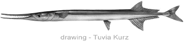

Красноморский тилозур. Рыба игла.
( Tylosurus choram )
Длинная как щука рыба-игла плавает небольшими стаями у поверхности моря.
Размер до метра. Заметно зубастый рот. Как и у щуки зубы хорошо видны со стороны. Говорят, что эта рыба не кусает жертву, а сначала протыкает её своим тонким зубастым ртом. Вот за это, а не за стройную фигуру, её называют рыба-игла .
На самом деле манера охоты Тилозура проще - проплывая мимо мелкой рыбёшки вроде антиаса, он делает резкое боковое движение клювом, и цепляет её своими острыми зубами.
Версия о протыкании иглой , вероятно, произошла от реальной опасности зубастого клюва рыбы-иглы для человека.

Тилозуры стаями охотятся на мелкую рыбу вблизи поверхности моря. При этом иногда в азарте охотник сильно разгоняется, выпрыгивает из воды, и с большой скоростью пролетает много метров над водой. Были случаи, когда в полёте рыба ранила клювом людей (тоже рыбаков), случайно оказавшихся на траектории полёта. Иногда при этом рыба ломает челюсть, и сама страдает не меньше человека.
Название рыба игла немного запутывает. Рыбой иглой в Википедии называют родственников морского конька семейства Syngnathidae , которые встречаются в Чёрном море. В переводе с русского на английский Tylosurus choram или Tylosurus crocodilus превращаются в "Houndfish" - рыбу собаку, наверно из-за больших зубов. Так же часто в английских справочниках её называют Needlefish - рыба игла.

Рыба хирург, носороги и некоторые другие тоже могут ранить человека. У них есть твёрдые пластины около хвоста, которые используются для защиты, но могут и случайно задеть пловца.
Один раз я фотографировал хирургов, лёжа в воде на глубине 50-60см. Там было что-то для них важное, и они очень даже сильно меня пугали, делая угрожающие взмахи хвостом с оранжевыми скальпелями.
Если бы рыба зацепила скальпелем камеру или маску или ласты, то могла бы пораниться сама. Наверно она знала о такой опасности, и поэтому никто не пострадал.